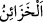
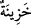
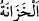

Ey Muhammed! Senden bazan ayetler indirmeni, bazan başka şeyler isteyen kafirlere
“de ki: “Ben size, Allah’ın hazineleri yanımdadır, demiyorum.” Yani ben Allah’ın
mukadderât hazinelerinin bana verildiğini, onda kendi başıma dilediğim ve istediğim
gibi tasarrufta bulunduğumu iddia etmiyorum ki, siz benden âyetler indirmemi veya
azabı getirmemi ya da dağları altın hâline çevirmemi yahut da benim şanıma uymayan
başka şeyleri taleb edesiniz.
(  ) kelimesi, (  ) kelimesinin çoğuludur ve yığılmış, biriktirilmiş
anlamındadır.
Haddâdî şöyle demiştir: Allah’ın hazineleri, kulların hazineleri gibi değildir. Allah
Teâlâ’nın hazîneleri, ancak O’nun yaratmasıyla var olan mukadderât hazîneleridir.
(  ) kelimesinin çoğulu olması da mümkündür. Bu kelime bir şeyin yığılıp
biriktirildiği yer anlamında mekan ismidir. Kimsenin elinin ulaşamayacağı şekilde bir
şeyi depolamak demektir.
Müşrikler, Peygamberimiz (s.a.)’e: “Sen Allah Teâlâ tarafından gönderilmiş bir
peygamber isen, bize dünyanın menfaat ve hayırlarını genişlet.” derlerdi. Buna göre
âyetin mânâsı şöyledir: “Rızkın anahtarlarının benim elimde olduğunu iddia etmiyorum
ki, onu daraltayım ve genişleteyim.”
Yine de ki: “Gaybı da bilmem.” Yani, ben Allah Teâlâ’nın fiilleri hakkında gaybı
bildiğimi de iddiâ etmiyorum ki siz bana kıyamet saatinin vaktini veya azabın ineceği
zamanı ya da benzer şeyleri sorasınız.
“Size ben” meleklerden bir “meleğim de demiyorum” ki siz beni göğe yükselmek ve
benzeri beşer gücünün dışında olan olağanüstü şeyler yapmaya zorlayasınız ya da bende
meleklere ait sıfatların bulunmamasını benim hakkımda bir kusur sayasınız.” Nitekim
onların “Bu ne biçim peygamber yemek yiyor, çarşılarda dolaşıyor!” (el-Furkan,
25/7) şeklindeki sözleri bunu haber vermektedir.
Âyetin buraya kadar olan kısmının mânâsı şöyledir: Ben bu üç şeyden hiçbirini iddia
etmiyorum ki, bana onların eserlerinden ve hükümlerinden olan şeyleri yapmamı teklif
edesiniz; benim buna icabet etmeyişimi, peygamberlik iddiamın doğru olmadığına delil
sayasınız. Peygamberliğin zikredilen şeylerle asla ilgisi yoktur. Peygamberlik, Allah
Teâlâ’dan vahiy almak ve gerektiği şekilde amel etmekten ibârettir. Nitekim Allah
Teâlâ’nın şu sözü bunu haber vermektedir:
“Ben, sadece bana vahyolunana uyarım.” Yani ben talep ederek veya diğer
yollardan biri ile asla vahiyde ve vahyedilende müdâhelem olmaksızın bana
vahyolunana uymaktan başka bir şey yapmıyorum.
Vahiy üç kısımdır:
1- Meleğin lisanıyla sabit olanlar. Kur’an, bu kabildendir.
2- Meleğin söz ile açıklaması olmadan işareti ile sabit olanlar. Rasûlullah (a.s.)’ın şu
hadisinde buna işaret vardır: “Ruhu’l-kuds (Cebrâil), kalbime şöyle üfledi: Hiçbir